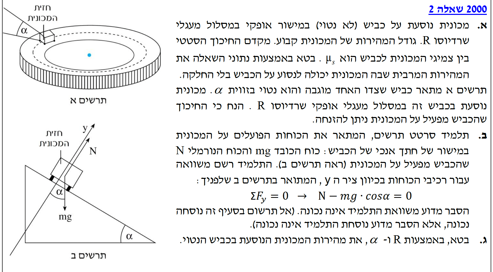

פתרון בגרות בפיזיקה - מכניקה 2000 שאלה 2

סעיף א' - מהירות מרבית בכביש אופקי
1. מה נתון:
- מכונית במסה \( m \) נוטה לבצע סיבוב במסלול אופקי שרדיוסו \( R \).
- מקדם החיכוך הסטטי בין צמיגי המכונית לכביש הוא \( \mu_s \).
- תאוצת הכובד נלקחת כרגיל (MKS): \( g = 10 \, \text{m/s}^2 \), וכיוונה כלפי מטה.
2. מה מחפשים:
את גודל המהירות המרבית, \( v_{max} \), שבה המכונית יכולה לנסוע מבלי להחליק החוצה ממרכז המעגל.
3. נוסחאות בשימוש (מתוך דף הנוסחאות):
4. הצבה ופתרון:
תחילה נבחר מערכת צירים הנוחה לניתוח התנועה: ציר \( x \) מצביע בצורה רדיאלית לעבר מרכז הסיבוב האופקי, וציר \( y \) מצביע אנכית כלפי מעלה.
מכיוון שהמכונית לא עולה או יורדת, אין לה תאוצה בציר ה- \( y \). נרשום את חוק שני של ניוטון עבור ציר זה:
בציר ה- \( x \), הכוח היחיד הפועל על המכונית הוא כוח החיכוך הסטטי, והוא זה שמספק את הכוח הצנטריפטלי שגורם לתאוצה הרדיאלית \( a_R \) לעבר מרכז הסיבוב.
כדי למצוא את המהירות המרבית בה הרכב יכול לנסוע בלי להחליק, עלינו לדרוש שכוח החיכוך הסטטי יגיע לערכו המקסימלי האפשרי. נציב את הביטוי לכוח חיכוך מקסימלי, המוכר לנו מדף הנוסחאות כ- \( f_{s,max} = \mu_s N \):
נציב את \( N \) שמצאנו מהמשוואה בציר \( y \) (\( N = mg \)):
מכיוון שהמסה \( m \) אינה אפס, נוכל לצמצם אותה משני אגפי המשוואה, ולבודד את המהירות המרבית \( v_{max} \):
סעיף ב' - זיהוי שגיאת התלמיד במישור משופע
1. מה נתון:
- כעת הכביש נטוי בזווית \( \alpha \) ביחס לאופק.
- החיכוך כעת ניתן להזנחה (אין כוח חיכוך).
- תלמיד בחר מערכת צירים מוטה (כמו שבדרך כלל עושים במישור משופע רגיל): ציר \( x \) לאורך המורד, וציר \( y \) מאונך למישור הנטוי.
2. מה מחפשים:
הסבר פיזיקלי מדוע המשוואה שהתלמיד רשם עבור ציר ה-\( y \) הנטוי: \( \Sigma F_y = 0 \rightarrow N - mg \cos\alpha = 0 \), היא אינה נכונה במקרה זה.
3. נוסחאות בשימוש:
4. הצבה ופתרון (הסבר):
התלמיד בחר לנתח את הכוחות במערכת צירים המוכרת לו משאלות של החלקה על מישור משופע, והניח כי סכום הכוחות בציר ה-\( y \) הנטוי (המאונך למשטח) שווה לאפס. הנחה זו נכונה אך ורק אם לגוף אין שום תאוצה לאורך ציר זה (\( a_y = 0 \)).
אולם, המכונית שלנו אינה מחליקה במורד המדרון, אלא מבצעת תנועה מעגלית אופקית! כלומר, וקטור התאוצה הכוללת של המכונית (התאוצה הרדיאלית \( a_R \)) מצביע בצורה אופקית לחלוטין לעבר מרכז המסלול המעגלי.
מכיוון שווקטור התאוצה הוא אופקי, אם נפרק אותו לפי מערכת הצירים הנטויה של התלמיד, נקבל שלתאוצה יש רכיב גם בכיוון ציר \( x \) הנטוי, וגם בכיוון ציר \( y \) הנטוי. לכן, התאוצה בכיוון \( y \) הנטוי איננה אפס (\( a_y \neq 0 \)).
סעיף ג' - מהירות בכביש נטוי ללא חיכוך
1. מה נתון:
- כביש נטוי בזווית \( \alpha \).
- רדיוס הסיבוב האופקי הוא \( R \).
- החיכוך נזנח.
2. מה מחפשים:
למצוא ביטוי לגודל מהירות המכונית \( v \), המאפשרת למכונית לבצע את התנועה המעגלית בגובה קבוע (ללא החלקה למעלה או למטה במדרון), תוך שימוש בנתונים \( R \) ו- \( \alpha \) בלבד.
3. נוסחאות בשימוש:
4. הצבה ופתרון:
כמו שלמדנו מהשגיאה של התלמיד בסעיף הקודם, נבחר מערכת צירים שבה ציר ה-\( x \) מכוון אופקית לעבר מרכז המסלול המעגלי, וציר ה-\( y \) מכוון אנכית כלפי מעלה.
על המכונית פועלים שני כוחות בלבד: כוח הכובד \( mg \) המכוון אנכית מטה, והכוח הנורמלי \( N \) המאונך לכביש הנטוי. הזווית בין וקטור הכוח הנורמלי לציר ה-\( y \) האנכי שווה בדיוק לזווית השיפוע של הכביש, \( \alpha \). נפרק את הכוח הנורמלי לרכיביו:
- רכיב אנכי: \( N \cos\alpha \) (המתנגד לכוח הכובד).
- רכיב אופקי: \( N \sin\alpha \) (המצביע למרכז המעגל ומספק את התאוצה).
נרשום משוואת כוחות עבור ציר ה-\( y \). המכונית שומרת על גובה קבוע, ולכן אין לה תאוצה בציר זה:
כעת נרשום משוואת כוחות עבור ציר ה-\( x \). הרכיב האופקי של הכוח הנורמלי הוא הכוח היחיד שפועל בציר זה, והוא מקנה למכונית את תאוצתה הרדיאלית \( a_R \):
נציב את הביטוי שמצאנו ל-\( N \) לתוך המשוואה של ציר ה-\( x \):
נצמצם שוב את מסת המכונית \( m \), ונשתמש בזהות הטריגונומטרית המוכרת לחיבור סינוס וקוסינוס: \( \frac{\sin\alpha}{\cos\alpha} = \tan\alpha \). נקבל:
ולבסוף, נבודד את גודל המהירות \( v \) מתוך הביטוי: